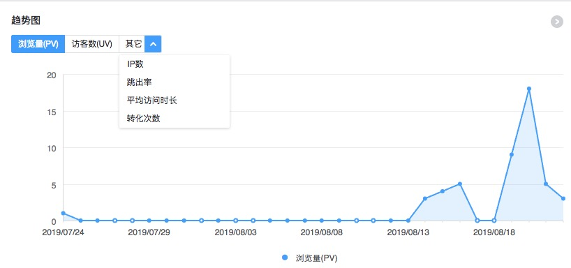
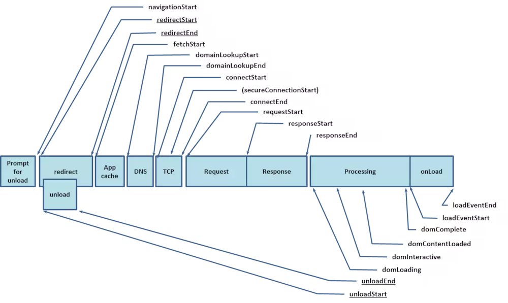
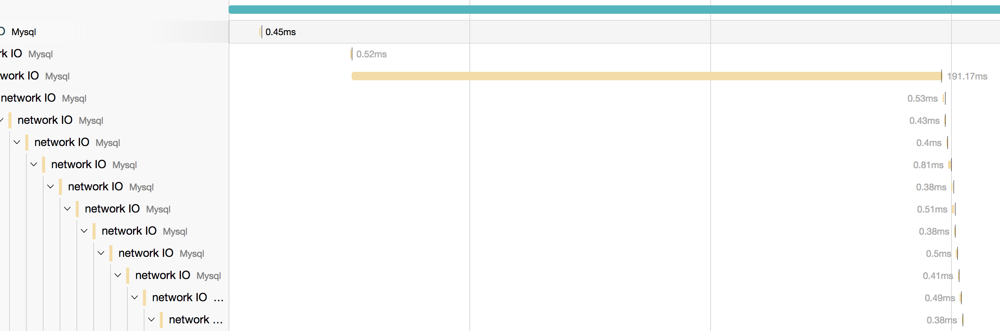

聊聊前端监控（一）--场景和类型
最近半年一直都在研究前端监控，发现对于前端来说，监控真的很重要，萌发了想写一系列文章全面梳理一下对前端监控的了解和总结。
1、主要场景
产品，首先要建立在使用场景上，所以首先讨论下监控使用的几个主要使用场景。纵观当前市面上各个前端监控产品，无外乎是满足两个方面的需求，监察用户的使用情况，监察系统的运行状态。所以当前也从 用户 和 系统 两个维度来讨论主要的使用场景。
1.1、用户使用情况
系统前端直面用户，即是和用户交流的窗口，也是产品运营数据第一手数据收集地，所以这是任何完备版的监控系统都绕不过去的话题。
pv、uv等运行数据

运维一个网站，有多少人来访问了，每天访问的人次是多少，这些数据是衡量一个网站运行好坏的晴雨表。当前比较主要的维度列举如下：
- pv： 访问人次，一般每次刷新页面都会 + 1
- uv： 访问人数，每人一天内只计数一次，一般小于等于pv
- ip数：访问的ip数量
- 跳出率：打开一个网页的次数／总的网页访问数
- 平均访问时长：访问总时长 / 访问页数
- 平均访问深度：在当前域名跳转的次数 / 访问次数
- 会话数：用户发起的session的数量
- 路由切换量（rpv）：由于当前很多较复杂的网站都是采用spa结构，使用传统的pv，uv不能反映用户真实使用状况，所以这个指标就显得非常重要了，一般来说路由切换一次 rpv + 1，最终得到一个路由访问的次数
各个统计网站都根据不同的维度和认知对行为数据进行统计，然后通过时间维度，按（时/天/月）来对网站的运行数据进行分析，得到当前网站的运行状态。
埋点，点击流
为了要记录用户在网站上的点击，拖动，跳转等行为，对页面上元素绑定的一些事件并上报记录，称作埋点。有的网站只针对重点操作进行埋点，用作审计和时候追查，而另一些网站做全量事件拦截，对用户的所有行为数据都进行记录。通过埋点，可以知道用户在网站上做了哪些操作，为事后审计和查找问题提供帮助。
点击流，是基于以上的埋点的记录，把一系列事件串起来，形成一个用户操作的链条。
通过点击流和埋点，可以分析用户的使用习惯，找到用户在网站使用上碰到的问题，帮助网站做的更好。比如，在点击购买链接前，如果多数都会点击对比商品的按钮，那么对比按钮的位置就需要得到凸显等等。
场景回放
基于埋点和点击流，我们可以做到对用户使用场景的回放和还原，比如用户点击了一些敏感操作按钮，可以帮助用户找到操作失误记录，再比如对于较难复现的bug，可以通过场景回放来重放用户的操作步骤，复现bug。
录屏
场景回放的进阶版，终极大法。通过视频对用户操作进行还原，直观且强大。不过这种科技是要付出代价的，在实现上，可能会碰到不小的麻烦。后面我们在讲实现的时候再具体讨论。
1.2 系统运行情况
除了对用户行为的监看，前端监控和后端监控有很多类似场景，存在很多监控系统运行的场景，据当前收集的资料和对一些系统的调研来看，包含了以下几个主要方面：
错误感知
感知前端页面运行时产生的错误，错误包含多个维度，根据不同系统监控程度不同，一般分成：
- 控制台错误： runtime报出的错误，一般会打印在浏览器开发工具的控制台，这样
- 网络错误： 一般包括 http 等与服务器交互产生的请求错误，比如 http response 返回值为4xx，5xx等错误
- 业务系统自定义错误：一般是各系统自己定义的需要上报的业务错误，比如 http 返回 200，但其实接口返回错误码
耗时统计
时间，是影响用户网站体验的主要因素之一。所以打开速度、各种响应速度，都成了监控统计的主要项目，对于耗时，一般根据侧重点不同，分成：
页面加载耗时：主要是收集由performace.timing对象提供计算出的各种时间实现的，具体时间可以参考下图 
接口请求耗时：主要用于统计对后端接口的耗时情况
全链路状态感知
全链路状态感知，也称作端到端的全链路监控，基本会收集从请求从 web server 到 db 的全生命周期的状态，基本会记录整个请求在处理过程中各个环节的具体耗时等信息。
2、对应场景的监控类型
以上说明了当前了解到的各个监控的使用场景，我的理解，当前监控的类型大致可以分为以下3类：行为监控，异常监控，链路监控。按照之前的场景说明来归纳和对应下。
2.1、行为监控
主要负责监控用户的使用情况，比如点击流，pv，uv等指标都属于此类。还有上面提到的场景回放和录屏也可以归到这一类上面。
行为监控一般的展现形式都是图表，同时提供基于时间等维度的对比功能，能够比较直观的看出数据的变化和趋势对比。
2.2、异常监控
包括浏览器主动抛出的错误和接口错误的情况，一般来说异常监控会以列表的形式展示收集到的错误信息，可能包括用户 UA，Ip，网络状态，请求url等等信息的展示。
很多异常监控也结合sourcemap来还原错误堆栈和现场，提供快速查找错误的能力。
2.3、链路监控
链路监控对应上面全链路感知的场景，一般的展示场景可以参考开发者工具中的timeline类似，可以直观的看出各阶段耗时情况。

同时由于链路监控涉及到后端系统的改造工作，当前大部分前端监控系统是缺少这方面能力的，如何将链路监控很好的融合到当前监控系统中去，是一个值得思考的命题。
好了，第一篇讲了一些前端监控的场景和分类，第二篇，我们来讨论一些监控等等技术实现。